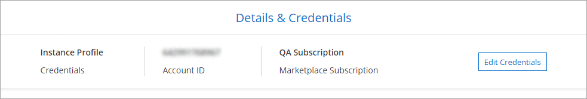

Cloud Manager 3.8 の新機能
寄稿者
通常、 Cloud Manager では毎月新しいリリースが導入され、新機能、拡張機能、およびバグ修正が提供されます。

|
以前のリリースをお探しですか？"3.7 の新機能" |
新しい Terraform プロバイダ（ 2020 年 10 月 19 日）
ネットアップは、 DevOps チームが Cloud Manager と連携して Cloud Volumes ONTAP を自動化し、コードとしてインフラと統合できる新しい Terraform プロバイダを開発しました。
Cloud Manager 3.8.9 の更新（ 2020 年 10 月 18 日）
を活用して "Spot の Cloud Analyzer の略"Cloud Manager では、クラウドコンピューティング関連のコストを高水準で分析し、コスト削減の可能性を特定できるようになりました。この情報は、 Cloud Manager の * Compute * サービスから入手できます。 "詳細はこちら。"。

Cloud Manager 3.8.9 の更新（ 2020 年 10 月 13 日）
Cloud Tiering には、次の 2 つの更新がリリースされてい
-
Cloud Tiering のライセンスが Cloud Manager から提供されるようになりました。
従量課金制のサブスクリプション、 FabricPool 階層化ライセンスの _ ONTAP _ 、またはその組み合わせを使用して、オンプレミスの ONTAP クラスタからクラウドへのデータ階層化を行うことができます。
-
スタンドアロンの Cloud Tiering サービスは廃止されました。Cloud Tiering には、 Cloud Manager から直接アクセスできます。 Cloud Manager には、同じ機能がすべて利用できます。
Cloud Manager 3.8.9 （ 2020 年 10 月 4 日）
Cloud Compliance の機能拡張
-
Cloud Manager に、新しい * Cloud Compliance Viewer * ロールが追加されました。
このロールを割り当てられたユーザーは、コンプライアンス情報を表示し、アクセス権限を持つワークスペースのレポートを生成することのみができます。Cloud Compliance の設定は管理できず、他の Cloud Manager の機能やサービスにはアクセスできません。これは、 Cloud Compliance スキャンの結果を監視できるようにするために、法務部門にとって最適な役割です。を参照してください "ユーザロール" を参照してください。
-
MongoDB データベーススキーマと PostgreSQL データベーススキーマのスキャンがサポートされるようになりました。を参照してください "データベーススキーマをスキャンしています" を参照してください。
-
Cloud Compliance の価格は、 10 月 7 日時点で変更されています。
Cloud Compliance が Cloud Manager ワークスペースでスキャンする最初の 1TB のデータは無料です。これには、 Cloud Volumes ONTAP ボリューム、 Azure NetApp Files ボリューム、 Amazon S3 バケット、データベーススキーマのデータが含まれます。1TB に達したあとに追加データをスキャンするには、サブスクリプションが必要です。を参照してください "価格設定" を参照してください。
Cloud Volumes Service for AWS の機能拡張
新しいボリュームを作成するときに、そのボリュームを別のボリュームの既存の Snapshot コピーに基づいて作成することができます。
Cloud Sync の統合
ネットアップの Cloud Sync サービスが Cloud Manager 内から利用できるようになりました。Cloud Sync は、シンプルでセキュアな自動化された方法で、データを任意のソースデスティネーションから、クラウド内または社内の任意のターゲットデスティネーションに移行します。 "詳細はこちら。"。
アカウント管理の機能拡張
アカウントを管理する方法が追加されました。
-
アカウントリソースの概要が表示されます。
アカウント内のユーザー、ワークスペース、コネクタ、およびサブスクリプションの数を簡単に表示できます。
-
アカウントの名前を変更できます。
-
アカウント ID 、ワークスペース ID 、またはコネクタ ID をコピーできます。
これらの ID をコピーすると、計画している自動化機能に役立ちます。
-
SaaS プラットフォームの使用を無効にできます。
会社のセキュリティポリシーに準拠するために必要な場合を除き、 SaaS プラットフォームを無効にすることはお勧めしません。SaaS プラットフォームを無効にすると、ネットアップの統合クラウドサービスを使用できなくなります。 "詳細はこちら。"。

政府地域の変更
コネクタを AWS GovCloud リージョン、 Azure Government リージョン、または Azure DoD リージョンに導入した場合、 Cloud Manager へのアクセスはコネクタのホスト IP アドレスからのみ可能になりました。SaaS プラットフォームへのアクセスは、アカウント全体で無効になります。
つまり、エンドユーザの内部 VPC / VNet にアクセスできる特権ユーザのみが Cloud Manager の UI または API を使用できます。
Cloud Manager 3.8.8 アップデート（ 2020 年 9 月 22 日）
Kubernetes サービスが強化され、使いやすくなりました。また、次のような機能も追加されています。
-
クラウドプロバイダのマネージド Kubernetes サービスで実行されている Kubernetes クラスタを簡単に検出できるようになりました。
[ クラスタの検出 ] をクリックするだけで、すでに指定したクラウドプロバイダの権限を使用して管理対象クラスタが検出されます。
-
検出された Kubernetes クラスタについて、状態、ボリューム数、ストレージクラスなどの詳細情報を確認できるようになりました。

-
クラスタと Cloud Volumes ONTAP の間の通信を確保するために、リソースとエラーをチェックする機能が追加されました。そうでない場合は、お知らせいたします。
Connector のサービスアカウントでは、 Google Kubernetes Engine （ GKE ）で実行されている Kubernetes クラスタを検出および管理するために次の権限が必要です。
- container.*Cloud Manager 3.8.8 の更新プログラム（ 2020 年 9 月 10 日）
Cloud Manager を使用してグローバルファイルキャッシュを導入する際には、次の点を改善できます。
-
AWS の Cloud Volumes ONTAP HA ペアが、中央ストレージのバックエンドストレージプラットフォームとしてサポートされるようになりました。
-
複数のグローバルファイルキャッシュコアインスタンスを負荷分散設計に配置できます。
Cloud Manager 3.8.8 （ 2020 年 9 月 9 日）
Cloud Volumes Service for Google Cloud のサポート
-
作業環境を追加して、既存の Cloud Volumes Service for GCP ボリュームを管理し、新しいボリュームを作成します。 "詳細をご確認ください"。
-
Linux クライアントと UNIX クライアントの場合は NFSv3 ボリュームと NFSv4.1 ボリューム、 Windows クライアントの場合は SMB 3.x ボリュームを作成して管理します。
-
ボリューム Snapshot を作成、削除、およびリストアします。
クラウドへのバックアップで、オンプレミスの ONTAP クラスタがサポートされるようになりました
オンプレミスの ONTAP システムからクラウドへのデータのバックアップを開始オンプレミスの作業環境でクラウドへのバックアップを有効にし、 Azure Blob Storage にボリュームをバックアップ "詳細はこちら。"。
クラウドへのバックアップの機能拡張
使いやすさを向上させるため、ユーザインターフェイスを改訂しました。
-
ボリュームリストページでは、バックアップ対象のボリュームと使用可能なバックアップを簡単に確認できます
-
各作業環境のバックアップ設定を表示するバックアップ設定ページ
Cloud Compliance の機能拡張
-
データベースからデータをスキャンできます
データベースをスキャンして、各スキーマに存在する個人データと機密データを特定します。サポートされているデータベースには、 Oracle 、 SAP HANA 、 SQL Server （ MSSQL ）があります。 "データベースのスキャンの詳細については、こちらをご覧ください"。
-
データ保護（ DP ）ボリュームをスキャンする機能
DP ボリュームは、通常はオンプレミスの ONTAP クラスタからの SnapMirror 処理のデスティネーションボリュームです。オンプレミスファイルに保存されている個人データや機密データを簡単に識別できるようになりました。 "方法を参照してください"。
ナビゲーションが更新されました
Cloud Manager のヘッダーを更新したので、 NetApp クラウドサービス間の移動が簡単になりました。
[ すべてのサービスを表示 ] をクリックすると、ナビゲーションに表示するサービスをピン留めしたり、ピン留めを解除したりできます。

ご覧のように、 [ アカウント ] 、 [ ワークスペース ] 、 [ コネクタ ] のドロップダウンも更新されているので、現在の選択内容を簡単に確認できます。
管理の改善
-
非アクティブなコネクタを Cloud Manager から削除できるようになりました。 "詳細をご確認ください"。

-
現在クラウドプロバイダのクレデンシャルに関連付けられている Marketplace サブスクリプションを置き換えることができるようになりました。請求方法を変更する必要がある場合は、この変更を利用して、適切な Marketplace サブスクリプションを通じて課金されるようにすることができます。
詳細をご確認ください "AWS の場合"、 および 。
Azure の必要な権限に関する更新情報（ 2020 年 8 月 6 日）
Azure の導入でエラーが発生しないように、 Azure の Cloud Manager ポリシーに次の権限が含まれていることを確認してください。
"Microsoft.Resources/deployments/operationStatuses/read"Azure では、一部の仮想マシン環境（導入時に使用される基盤となる物理ハードウェアによって異なる）に対してこの権限が必要となります。
Cloud Manager 3.8.7 （ 2020 年 8 月 3 日）
新しいソフトウェアサービスエクスペリエンス
ネットアップは、 Cloud Manager のソフトウェアサービスエクスペリエンスを全面的に導入しました。この新しいエクスペリエンスにより、 Cloud Manager の使用が簡単になり、ハイブリッドクラウドインフラ管理のための追加機能を提供できるようになりました。
Cloud Manager にはが含まれています "SaaS-based インターフェイス" NetApp Cloud Central に統合されているコネクタ。 Cloud Manager がパブリッククラウド環境内のリソースとプロセスを管理できるようにします。（コネクタは、実際にはインストール済みの既存の Cloud Manager ソフトウェアと同じです）。

|
ほとんどの場合コネクタは必要ですが、 Cloud Sync 、 Cloud Volumes Service 、または Azure NetApp Files を Cloud Manager から使用する必要はありません。 |
このリリースノートですでに説明したように、コネクタ用のマシンタイプをアップグレードして、当社が提供する新しい機能にアクセスする必要があります。Cloud Manager にマシンタイプを変更する手順が表示されます。 "詳細はこちら。"。
Cloud Volumes ONTAP の機能拡張
Cloud Volumes ONTAP では、 2 つの拡張機能を使用できます。
-
* 追加容量を割り当てるための複数の BYOL ライセンス *
Cloud Volumes ONTAP BYOL システムに複数のライセンスを購入して、 368 TB を超える容量を割り当てることができるようになりました。たとえば、 2 つのライセンスを購入して、 Cloud Volumes ONTAP に最大 736TB の容量を割り当てることができます。また、 4 つのライセンスを購入して、最大 1.4 PB までライセンスを取得することもできます。
シングルノードシステムまたは HA ペアに対して購入できるライセンスの数に制限はありません。
ディスク制限によって、ディスクだけを使用することで容量制限に達することがないことに注意してください。を使用すると、ディスク制限を超えることができます "使用頻度の低いデータをオブジェクトストレージに階層化します"。ディスクの制限については、を参照してください "ストレージの制限については、『 Cloud Volumes ONTAP リリースノート』を参照してください"。
-
* 外部キーを使用して Azure 管理対象ディスクを暗号化 *
別のアカウントの外部キーを使用して、シングルノード Cloud Volumes ONTAP システムの Azure 管理ディスクを暗号化できるようになりました。この機能は API を使用してサポートされます。
シングルノードシステムの作成時に API 要求に次の情報を追加するだけです。
"azureEncryptionParameters": { "key": <azure id of encryptionset> }この機能を使用するには、最新ので示されている新しい権限が必要です "Azure 向け Cloud Manager ポリシー"。
"Microsoft.Compute/diskEncryptionSets/read"
Azure NetApp Files の機能拡張
このリリースには、 Azure NetApp Files のサポートに関する機能拡張が複数含まれています。
-
* Azure NetApp Files セットアップ *
Azure NetApp Files を Cloud Manager から直接セットアップおよび管理できるようになりました。 "詳細をご確認ください"。
-
* 新しいプロトコルのサポート *
NFSv4.1 ボリュームと SMB ボリュームを作成できるようになりました。
-
* 容量プールとボリュームスナップショットの管理 *
Cloud Manager では、ボリューム Snapshot を作成、削除、リストアできます。新しい容量プールを作成してそのサービスレベルを指定することもできます。
-
* ボリュームの編集機能 *
ボリュームのサイズを変更し、タグを管理することで、ボリュームを編集できます。
Cloud Volumes Service for AWS の機能拡張
Cloud Manager では、 Cloud Volumes Service for AWS をサポートするために多数の機能拡張が行われています。
-
* 新しいプロトコルのサポート *
NFSv4.1 ボリューム、 SMB ボリューム、およびデュアルプロトコルボリュームを作成できるようになりました。これまでは、 Cloud Manager で NFSv3 ボリュームを作成して検出することしかできませんでした。
-
* スナップショットサポート *
Snapshot ポリシーを作成して、ボリューム Snapshot の作成、オンデマンド Snapshot の作成、 Snapshot からのボリュームのリストア、既存の Snapshot に基づく新しいボリュームの作成などを自動化できます。を参照してください "Cloud Volume スナップショットの管理" を参照してください。
-
* Cloud Manager * からリージョン内に初期ボリュームを作成します
このリリースより前のリリースでは、各リージョンの最初のボリュームを Cloud Volumes Service for AWS インターフェイスで作成する必要がありました。これで、にサブスクライブできるようになりました "AWS Marketplace で提供されている NetApp Cloud Volumes Service ソリューションの 1 つ" 次に、 Cloud Manager から最初のボリュームを作成します。
Cloud Compliance の機能拡張
以下の機能強化がクラウドコンプライアンスで利用できるようになりました。
-
* Cloud Compliance インスタンスの導入プロセスを改訂 *
Cloud Compliance インスタンスのセットアップと導入には、 Cloud Manager の新しいウィザードを使用します。導入が完了したら、スキャンする作業環境ごとにサービスを有効にします。
-
* 作業環境内でスキャンするボリュームを選択する機能 *
Cloud Volumes ONTAP または Azure NetApp Files 作業環境内の個々のボリュームに対するスキャンを有効または無効にできるようになりました。特定のボリュームで準拠状況をスキャンする必要がない場合は、スキャンをオフにします。
-
* ナビゲーションタブを使用して、関心領域にすばやくジャンプできます。 *
Dashboard 、 Investigation 、 Configuration の新しいタブを使用すると、これらのセクションに簡単にアクセスできます。
-
* HIPAA レポート *
新たに Health Insurance Portability and Accountability Act （ HIPAA ：医療保険の携行性と責任に関する法律）レポートが公開されました。このレポートは、 HIPAA データプライバシー法に準拠するという組織の要件を支援するために作成されています。
-
* 新しい機密性の高い個人データ型 *
クラウドコンプライアンスでは、ファイル内に ICD-9-CM Medical Codes を検索できるようになりました。
-
* 新しい個人データ型 *
Cloud Compliance では、新しい 2 つの国 ID （クロアチア ID （ OIB ）とギリシャ ID ）がファイルに追加されました。
クラウドへのバックアップの機能拡張
次の機能拡張がクラウドへのバックアップに使用できるようになりました。
-
* お客様所有のライセンスを使用（ BYOL ）できるようになりました *
クラウドへのバックアップは、従量課金制（ PAYGO ）ライセンスでのみ利用できます。BYOL ライセンスを使用すると、一定期間、および最大容量のバックアップスペースの間、ネットアップからライセンスを購入して Backup to Cloud を使用できます。いずれかの制限に達すると、ライセンスを更新する必要があります。
-
* データ保護（ DP ）ボリューム * のサポート
データ保護ボリュームをバックアップおよびリストアできるようになりました。
グローバルファイルキャッシュのサポート
ネットアップのグローバルファイルキャッシュを使用すると、分散したファイルサーバのサイロをパブリッククラウドの 1 つの包括的なグローバルストレージ容量に統合できます。これにより、グローバルにアクセス可能なファイルシステムがクラウド内に作成され、分散したすべての場所がローカルの場合と同様に使用できるようになります。
このリリースから、グローバルファイルキャッシュ管理インスタンスとコアインスタンスを Cloud Manager で導入および管理できるようになりました。これにより、初期導入プロセスでは数時間を節約でき、このシステムと他の導入済みシステムについて Cloud Manager を使用した単一のコンソールが提供されます。グローバルファイルキャッシュエッジインスタンスは、引き続きリモートオフィスでローカルに導入されます。
を参照してください "Global File Cache の概要" を参照してください。
Cloud Manager を使用して導入できる初期設定は、次の要件を満たす必要があります。従来の手順を使用して、 Cloud Volumes Service 、 Azure NetApp Files 、 Cloud Volumes Service for AWS や GCP などの他の設定も引き続き導入されます。 "詳細はこちら。"。
-
中央ストレージとして使用するバックエンドストレージプラットフォームは、 Azure で Cloud Volumes ONTAP HA ペアを導入済みの作業環境である必要があります。
他のストレージプラットフォームやクラウドプロバイダは、現時点では Cloud Manager を使用してサポートされていませんが、従来の導入手順を使用して導入することもできます。
-
GFC コアは、スタンドアロンインスタンスとしてのみ導入できます。
複数のコアインスタンスを含む負荷分散設計を使用する必要がある場合は、レガシー手順を使用する必要があります。
この機能を使用するには、最新ので示されている新しい権限が必要です "Azure 向け Cloud Manager ポリシー"。
"Microsoft.Resources/deployments/operationStatuses/read",
"Microsoft.Insights/Metrics/Read",
"Microsoft.Compute/virtualMachines/extensions/write",
"Microsoft.Compute/virtualMachines/extensions/read",
"Microsoft.Compute/virtualMachines/extensions/delete",
"Microsoft.Compute/virtualMachines/delete",
"Microsoft.Network/networkInterfaces/delete",
"Microsoft.Network/networkSecurityGroups/delete",
"Microsoft.Resources/deployments/delete",エクスペリエンスの向上には、より強力な機械タイプが必要（ 2020 年 7 月 15 日）
Cloud Manager のエクスペリエンスを向上させるためには、マシンタイプをアップグレードして、これから提供する新しい機能にアクセスする必要があります。この改善には、が含まれます "Cloud Manager のソフトウェアサービスエクスペリエンス" クラウドサービスの統合機能が新しく強化されています。
Cloud Manager にマシンタイプを変更する手順が表示されます。
以下に詳細を示します。
-
Cloud Manager の新機能が正常に機能するように、適切なリソースを利用できるようにするために、デフォルトのインスタンス、 VM 、マシンのタイプを次のように変更しました。
-
AWS ： t3.xlarge
-
Azure ： DS3 v2
-
GCP ： n1-standard-4
サポートされる最小サイズは、これらのデフォルトサイズです "CPU と RAM の要件に基づきます"。
-
-
この移行の一環として、 Cloud Manager は次のエンドポイントにアクセスして、 Docker インフラのコンテナコンポーネントのソフトウェアイメージを取得できるようにする必要があります。
Cloud Manager からこのエンドポイントへのアクセスがファイアウォールで有効になっていることを確認してください。
Cloud Manager 3.8.6 （ 2020 年 7 月 6 日）
iSCSI ボリュームのサポート
Cloud Manager では、 Cloud Volumes ONTAP クラスタとオンプレミス ONTAP クラスタの iSCSI ボリュームをユーザインターフェイスから直接作成できるようになりました。
iSCSI ボリュームを作成すると、 Cloud Manager によって自動的に LUN が作成されます。ボリュームごとに 1 つの LUN だけを作成することでシンプルになり、管理は不要になります。ボリュームを作成したら、 "IQN を使用して、から LUN に接続します ホスト"。
|
|
LUN は、 System Manager または CLI を使用して追加で作成できます。 |
「すべて」の階層化ポリシーがサポートされます
Cloud Volumes ONTAP のボリュームを作成または変更するときに、「すべて」の階層化ポリシーを選択できるようになりました。「すべて」の階層化ポリシーを使用すると、データはすぐにコールドとしてマークされ、オブジェクトストレージにできるだけ早く階層化されます。 "データ階層化の詳細については、こちらをご覧ください。"。
Cloud Manager から SaaS への移行（ 2020 年 6 月 22 日）
ネットアップは、 Cloud Manager 向けのサービスとしてのソフトウェアエクスペリエンスを提供します。この新しいエクスペリエンスにより、 Cloud Manager の使用が簡単になり、ハイブリッドクラウドインフラ管理のための追加機能を提供できるようになりました。 "詳細はこちら。"。
Cloud Manager 3.8.5 （ 2020 年 5 月 31 日）
Azure Marketplace での新しいサブスクリプションが必要です
Azure Marketplace で新しいサブスクリプションが提供されています。Cloud Volumes ONTAP 9.7 PAYGO を導入するには、この 1 回限りのサブスクリプションが必要です（ 30 日間の無償トライアルシステムを除く）。サブスクリプションでは、 Cloud Volumes ONTAP PAYGO および BYOL のアドオン機能も提供できます。作成した Cloud Volumes ONTAP PAYGO システムごと、および有効にしたアドオン機能ごとに、このサブスクリプションから料金が請求されます。
新しい Cloud Volumes ONTAP システム（ 9.7 P1 以降）の導入時に、 Cloud Manager からこのサービスへの登録を求められます。

クラウドへのバックアップの機能拡張
次の機能拡張がクラウドへのバックアップに使用できるようになりました。
-
Azure では、新しいリソースグループを作成したり既存のリソースグループを選択したりできるようになりました。 Cloud Manager でリソースグループを作成する必要はありません。クラウドへのバックアップを有効にしたあとでリソースグループを変更することはできません。
-
AWS では、 Cloud Manager AWS アカウントとは別の AWS アカウントにある Cloud Volumes ONTAP インスタンスをバックアップできるようになりました。
-
ボリュームのバックアップスケジュールを選択する際に追加のオプションを使用できるようになりました。日単位、週単位、月単位のバックアップオプションに加え、日単位 30 、週単位 13 、月単位 12 のバックアップなどの組み合わせポリシーを提供するシステム定義のポリシーのいずれかを選択できるようになりました。
-
ボリュームのすべてのバックアップを削除したあと、そのボリュームのバックアップの作成を再開できるようになりました。これは、以前のリリースの既知の制限事項です。
Cloud Compliance の機能拡張
Cloud Compliance で使用できる機能拡張は次のとおりです。
-
Cloud Compliance インスタンスとは異なる AWS アカウントにある S3 バケットをスキャンできるようになりました。既存の Cloud Compliance インスタンスがこれらのバケットに接続できるようにするには、新しいアカウントにロールを作成する必要があります。 "詳細はこちら。"。
リリース 3.0.5 より前に Cloud Compliance を設定した場合は、既存のを変更する必要があります "Cloud Compliance インスタンスの IAM ロール" をクリックしてください。
-
調査ページの内容をフィルタして、表示する結果のみを表示できるようになりました。フィルタには、作業環境、カテゴリ、プライベートデータ、ファイルタイプ、最終変更日、 S3 オブジェクトの権限がパブリックアクセスに対して許可されているかどうか。

-
作業環境で Cloud Compliance を活動化または非活動化できるように、 Cloud Compliance タブから直接活動化できるようになりました。
Cloud Manager 3.8.4 アップデート（ 2020 年 5 月 10 日）
Cloud Manager 3.8.4 の機能拡張をリリースしました。
Cloud Insights の統合
Cloud Manager は、ネットアップの Cloud Insights サービスを活用することで、 Cloud Volumes ONTAP インスタンスの正常性とパフォーマンスに関するインサイトを提供し、クラウドストレージ環境のパフォーマンスのトラブルシューティングと最適化を支援します。 "詳細はこちら。"。
Cloud Manager 3.8.4 （ 2020 年 5 月 3 日）
Cloud Manager 3.8.4 では、次の点が改善されました。
クラウドへのバックアップの機能拡張
クラウドへのバックアップ（以前の S3_for AWS へのバックアップ）で次の機能拡張が可能になりました。
Cloud Manager 3.8.3 （ 2020 年 4 月 5 日）
Cloud Tiering との統合
ネットアップの Cloud Tiering サービスは、 Cloud Manager から利用できるようになりました。Cloud Tiering を使用すると、オンプレミスの ONTAP クラスタからクラウド内の低コストのオブジェクトストレージにデータを階層化できます。これにより、クラスタのハイパフォーマンスストレージスペースが解放され、より多くのワークロードに対応できるようになります。
Azure NetApp Files へのデータ移行
NFS または SMB データを Azure NetApp Files に Cloud Manager から直接移行できるようになりました。データの同期には、ネットアップの Cloud Sync サービスが利用されています。
Cloud Compliance の機能拡張
以下の機能強化がクラウドコンプライアンスで利用できるようになりました。
-
* Amazon S3 * の 30 日間無料トライアル版
Amazon S3 のデータをクラウドコンプライアンスでスキャンするための 30 日間無償トライアルを利用できるようになりました。Amazon S3 で Cloud Compliance を有効にしていた場合、 30 日間の無償トライアルは本日から有効になります（ 2020 年 4 月 5 日）。
AWS Marketplace へのサブスクリプションは、無償トライアルの終了後も Amazon S3 のスキャンを続行するために必要です。 "登録方法については、こちらをご覧ください"。
-
* 新しい個人データ型 *
Cloud Compliance のファイルに、新しい国別識別子（ブラジルの ID （ CPF ））が追加されました。
-
* 追加のメタデータカテゴリ * のサポート
Cloud Compliance では、データをさらに 9 つのメタデータカテゴリに分類できるようになりました。 "サポートされているメタデータカテゴリの一覧を確認します"。
S3 へのバックアップの機能拡張
Backup to S3 サービスで以下の機能拡張が可能になりました。
-
* バックアップ用の S3 ライフサイクルポリシー *
バックアップは _Standard_storage クラスから開始し、 30 日後に _Standard-Infrequent Access_storage クラスに移行します。
-
* バックアップを削除しています *
Cloud Manager API を使用してバックアップを削除できるようになりました。 "詳細はこちら。"。
-
* パブリックアクセスをブロック *
Cloud Manager でが有効になります "Amazon S3 ブロックのパブリックアクセス機能" バックアップが格納されている S3 バケット。
API を使用した iSCSI ボリューム
Cloud Manager API で iSCSI ボリュームを作成できるようになりました。 "例を参照してください"。
Cloud Manager 3.8.2 （ 2020 年 3 月 1 日）
Amazon S3 作業環境
Cloud Manager で、バケットがインストールされている AWS アカウントにある Amazon S3 バケットに関する情報が自動的に検出されるようになりました。これにより、リージョン、アクセスレベル、ストレージクラス、バケットを Cloud Volumes ONTAP で使用してバックアップとデータ階層化を行うかどうかなど、 S3 バケットの詳細を簡単に確認できます。また、以下の説明に従って、 Cloud Compliance で S3 バケットをスキャンできます。

Cloud Compliance の機能拡張
以下の機能強化がクラウドコンプライアンスで利用できるようになりました。
-
* Amazon S3 * のサポート
Cloud Compliance で Amazon S3 バケットをスキャンして、 S3 オブジェクトストレージにある個人データや機密データを特定できるようになりました。Cloud Compliance は、ネットアップソリューション用に作成されたバケットであるかどうかに関係なく、アカウント内の任意のバケットをスキャンできます。
-
* 調査ページ *
個人ファイル、機密性の高い個人ファイル、カテゴリ、およびファイルタイプごとに、新しい ［ 調査 ］ ページを使用できるようになりました。このページには、影響を受けるファイルの詳細が表示され、最も個人データ、機密性の高い個人データ、およびデータ主体の名前を含むファイルで並べ替えることができます。このページは、以前に使用可能だった CSV レポートに代わるものです。
次に例を示します。

"[ 調査 ページの詳細を確認してください"]。
-
* PCI DSS レポート *
新しい Payment Card Industry データセキュリティ Standard (PCI DSS) レポートが利用可能になりました。このレポートは、クレジットカード情報のファイルへの配布を識別するのに役立ちます。クレジットカード情報が含まれるファイルの数、作業環境が暗号化やランサムウェアから保護されているかどうか、保持の詳細などを確認できます。
-
* 新しい機密性の高い個人データ型 *
クラウドコンプライアンスでは、医療および医療業界で使用されている ICD-10-CM 医療コードを検索できるようになりました。
ボリュームの NFS バージョン
Cloud Volumes ONTAP のボリュームを作成または編集するときに、ボリュームで有効にする NFS のバージョンを選択できるようになりました。

Azure US Gov リージョンのサポート
Azure US Cloud Volumes ONTAP リージョンで HA ペアがサポートされるようになりました。
Cloud Manager 3.8.1 アップデート（ 2020 年 2 月 16 日）
Cloud Manager 3.8.1 の機能拡張をいくつかリリースしました。
S3 へのバックアップの機能拡張
-
バックアップコピーは、 Cloud Manager が AWS アカウントに作成する S3 バケットに格納されます。各 Cloud Volumes ONTAP 作業環境にバケットが 1 つずつ作成されます。
-
すべての AWS リージョンで S3 へのバックアップがサポートされるようになりました "Cloud Volumes ONTAP がサポートされている場合"。
-
バックアップスケジュールは、毎日、毎週、または毎月に設定できます。
-
Cloud Manager で Backup to S3 サービスへの _private リンクを設定する必要がなくなりました。
これらの機能拡張には、追加の S3 権限が必要です。Cloud Manager に権限を提供する IAM ロールに最新のからの権限を含める必要があります "Cloud Manager ポリシー"。
AWS が更新されます
新しい EC2 インスタンスのサポートと、 Cloud Volumes ONTAP 9.6 および 9.7 でサポートされるデータディスクの数の変更が導入されました。『 Cloud Volumes ONTAP リリースノート』の変更点を確認してください。
Cloud Manager 3.8.1 （ 2020 年 2 月 2 日）
Cloud Compliance の機能拡張
以下の機能強化がクラウドコンプライアンスで利用できるようになりました。
-
* Azure NetApp Files * のサポート
Cloud Compliance では、 Azure NetApp Files をスキャンして、ボリューム上に存在する個人データや機密データを特定できるようになりました。
-
* スキャンステータス *
Cloud Compliance で、 CIFS と NFS の各ボリュームのスキャンステータスが表示されるようになりました。これには、問題の修正に使用できるエラーメッセージも含まれます。

-
* 作業環境によるダッシュボードのフィルタリング *
Cloud Compliance ダッシュボードの内容をフィルタリングして、特定の作業環境のコンプライアンスデータを表示できるようになりました。

-
* 新しい個人データ型 *
データのスキャン時に、 Cloud Compliance がカリフォルニアドライバーズライセンスを特定できるようになりました。
-
* その他のカテゴリ * をサポートします
さらに、アプリケーションデータ、ログ、データベースファイル、インデックスファイルの 3 つのカテゴリがサポートされます。
アカウントとサブスクリプションの機能が強化されました
AWS アカウントまたは GCP プロジェクトと、従量課金制 Cloud Volumes ONTAP システムの関連するマーケットプレイスサブスクリプションを簡単に選択できるようになりました。これらの機能強化により、適切なアカウントやプロジェクトからの支払いが保証されます。
たとえば、 AWS でシステムを作成する際にデフォルトのアカウントとサブスクリプションを使用しない場合は、「 * クレデンシャルの編集」をクリックします。

そこから、使用するアカウントクレデンシャルと、関連する AWS Marketplace サブスクリプションを選択できます。必要に応じて、マーケットプレイスサブスクリプションを追加することもできます。

また、複数の AWS サブスクリプションを管理している場合は、それぞれのサブスクリプションを設定のクレデンシャルページから別々の AWS クレデンシャルに割り当てることができます。

スケジュールの機能拡張
タイムラインが強化され、使用する NetApp クラウドサービスに関する詳細情報が表示されるようになりました。
-
タイムラインに、同じ Cloud Central アカウント内のすべての Cloud Manager システムに対する処理が表示されるようになりました
-
列のフィルタリング、検索、追加、および削除により、情報をより簡単に検索できるようになりました
-
タイムラインデータを CSV 形式でダウンロードできるようになりました
-
今後は、使用するネットアップクラウドサービスごとにアクションがタイムラインに表示されます（ただし、情報を 1 つのサービスにフィルタリングすることも可能）。

Cloud Manager 3.8 （ 2020 年 1 月 8 日）
Azure の HA 機能が強化されました
Azure の Cloud Volumes ONTAP HA ペアで、次の機能拡張が利用できるようになりました。
-
* Cloud Volumes ONTAP HA の CIFS ロックを Azure * でオーバーライドします
Cloud Manager で設定を有効にして、 Azure メンテナンスイベント時の Cloud Volumes ONTAP ストレージフェイルオーバーの問題を回避できるようにすることができるようになりました。この設定を有効にすると、 Cloud Volumes ONTAP は CIFS ロックを拒否し、アクティブな CIFS セッションをリセットします。 "詳細はこちら。"。
-
* Cloud Volumes ONTAP からストレージアカウントへの HTTPS 接続 *
作業環境の作成時に、 Cloud Volumes ONTAP 9.7 HA ペアから Azure ストレージアカウントへの HTTPS 接続を有効にできるようになりました。このオプションを有効にすると、書き込みパフォーマンスに影響する可能性があります。作業環境の作成後に設定を変更することはできません。
-
* Azure 汎用 v2 ストレージアカウント * のサポート
Cloud Volumes ONTAP 9.7 HA ペア用に Cloud Manager で作成されるストレージアカウントが、汎用 v2 のストレージアカウントに変更されました。
GCP のデータ階層化機能の強化
GCP の Cloud Volumes ONTAP データ階層化では、次の機能強化が利用できます。
-
* データ階層化のための Google Cloud ストレージクラス *
Cloud Volumes ONTAP から Google Cloud Storage に階層化されるデータ用のストレージクラスを選択できるようになりました。
-
Standard Storage （デフォルト）
-
ニアラインストレージ
-
コールドラインストレージ
-
-
* サービスアカウントを使用したデータ階層化 *
9.7 リリース以降では、 Cloud Volumes ONTAP インスタンスにサービスアカウントが設定されます。このサービスアカウントは、 Google Cloud Storage バケットへのデータ階層化の権限を提供します。この変更により、セキュリティが強化され、必要なセットアップが少なくなります。新しいシステムを導入する際の詳しい手順については、 "このページの手順 4 を参照してください"。
次の図は、 Working Environment ウィザードを示しています。このウィザードでストレージクラスとサービスアカウントを選択できます。

Cloud Manager では、最新の機能に示すように、これらの機能拡張には次の GCP 権限が必要です "GCP 向け Cloud Manager ポリシー"。
- storage.buckets.update
- compute.instances.setServiceAccount
- iam.serviceAccounts.getIamPolicy
- iam.serviceAccounts.list ドキュメントの変更をリクエスト
ドキュメントの変更をリクエスト GitHub で編集
GitHub で編集 寄稿者向けガイド
寄稿者向けガイド